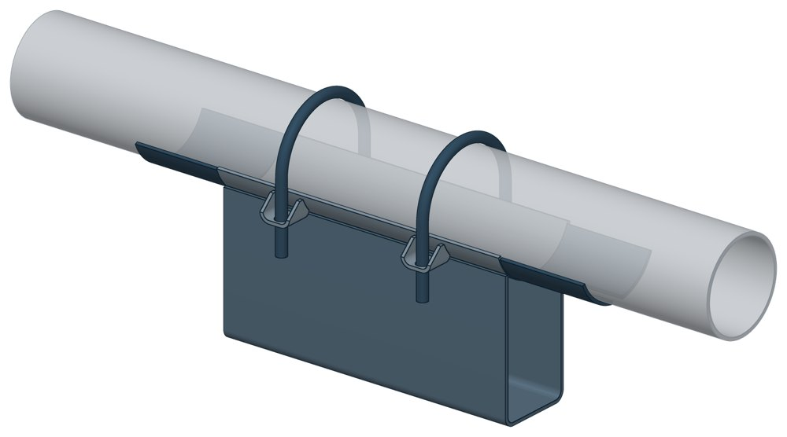
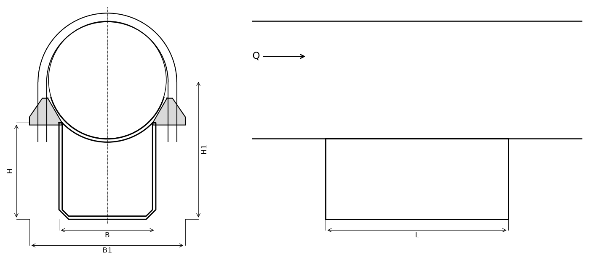

Опора неподвижная хомутовая с корпусом ТС-670
Неподвижная опора на корпусе: труба лежит в ложементе и притянута двумя хомутами. Корпус поднимает трубу над балкой на 100, 150 или 200 мм — под тепловую изоляцию.

- Диаметр трубы Dн
- 57–377 мм
- Документ
- Серия 5.903-13 вып. 7-95
- Исполнений
- 30
- Вертикальная P
- до 37 кН
- Боковая T
- до 200 кН
- Осевая Q
- до 380 кН
- Масса
- 3,8–39,6 кг
- Сталь
- Листовые детали — Ст3сп5 ГОСТ 14637-89, хомуты из круга — сталь 20 ГОСТ 1050-88. Для холодного климата — низколегированная сталь, в том числе 09Г2С; размеры опоры при этом не меняются.
- Покрытие
- По альбому серии — окраска по грунту, кроме поверхностей под сварку. Вид покрытия согласуется при заказе.
- 3D-модели
- у всех исполнений
Применение и монтаж
Назначение: где применяется
Трубопроводы Dн 57–377 мм. Держит три нагрузки сразу: осевую Q до 380 кН, боковую T до 200 кН и вертикальную P до 37 кН.
Монтаж: как устанавливается
Корпус приваривают к опорной конструкции (катет шва 4 мм для Dн 57–159 и 6 мм для Dн 219–377), трубу укладывают на подушку и притягивают хомутами с гайками. Упоры приваривают к трубе.
Отличия от соседних типов
Высота не нужна и диаметр до 219 мм — хватит хомутовой ТС-659. Диаметр больше 377 мм — бугельная с корпусом ТС-671.
Габаритная схема ТС-670

Состав комплекта на одну опору
| Корпус сварной (подушка, скоба, рёбра, ушки) | 1 шт. |
| Хомут | 2 шт. |
| Упор | 4 шт. |
| Гайка | 8 шт. |
Таблица исполнений ТС-670
| Обозначение | Код ПРОМБУРГ | Dнмм | Стенка Sмм | PкН | TкН | QкН | Нмм | Н1мм | Вмм | В1мм | Lмм | Массакг | 3D |
|---|---|---|---|---|---|---|---|---|---|---|---|---|---|
| ТС-670.00.00* | ПБ-670-0057-1 | 57 | 3 | 1 | — | 20 | 100 | 130 | 30 | 95 | 340 | 3,8 | 3D |
| ТС-670.00.00-01* | ПБ-670-0057-2 | 57 | 3 | 1 | — | 20 | 150 | 180 | 30 | 95 | 340 | 4,4 | 3D |
| ТС-670.00.00-02* | ПБ-670-0057-3 | 57 | 3 | 1 | — | 20 | 200 | 230 | 30 | 95 | 340 | 4 | 3D |
| ТС-670.00.00-03* | ПБ-670-0076-1 | 76 | 3 | 1 | — | 20 | 100 | 138 | 50 | 115 | 340 | 4,3 | 3D |
| ТС-670.00.00-04* | ПБ-670-0076-2 | 76 | 3 | 1 | — | 20 | 150 | 188 | 50 | 115 | 340 | 5,5 | 3D |
| ТС-670.00.00-05* | ПБ-670-0076-3 | 76 | 3 | 1 | — | 20 | 200 | 238 | 50 | 115 | 340 | 6,6 | 3D |
| ТС-670.00.00-06 | ПБ-670-0089-1 | 89 | 3,5 | 4,2 | — | 20 | 100 | 145 | 50 | 130 | 340 | 4,8 | 3D |
| ТС-670.00.00-07 | ПБ-670-0089-2 | 89 | 3,5 | 4,2 | — | 20 | 150 | 195 | 50 | 130 | 340 | 5,9 | 3D |
| ТС-670.00.00-08 | ПБ-670-0089-3 | 89 | 3,5 | 4,2 | — | 20 | 200 | 245 | 50 | 130 | 340 | 7,1 | 3D |
| ТС-670.00.00-09 | ПБ-670-0108-1 | 108 | 3,5 | 5,7 | 20 | 50 | 100 | 154 | 90 | 150 | 340 | 6,3 | 3D |
| ТС-670.00.00-10 | ПБ-670-0108-2 | 108 | 3,5 | 5,7 | 20 | 50 | 150 | 204 | 90 | 150 | 340 | 7,6 | 3D |
| ТС-670.00.00-11 | ПБ-670-0108-3 | 108 | 3,5 | 5,7 | 20 | 50 | 200 | 254 | 90 | 150 | 340 | 8,9 | 3D |
| ТС-670.00.00-12 | ПБ-670-0133-1 | 133 | 4 | 6 | 20 | 60 | 100 | 165 | 90 | 195 | 340 | 7,9 | 3D |
| ТС-670.00.00-13 | ПБ-670-0133-2 | 133 | 4 | 6 | 20 | 60 | 150 | 215 | 90 | 195 | 340 | 9,9 | 3D |
| ТС-670.00.00-14 | ПБ-670-0133-3 | 133 | 4 | 6 | 20 | 60 | 200 | 265 | 90 | 195 | 340 | 10,5 | 3D |
| ТС-670.00.00-15 | ПБ-670-0159-1 | 159 | 5 | 8,8 | 20 | 60 | 100 | 180 | 90 | 220 | 340 | 10,9 | 3D |
| ТС-670.00.00-16 | ПБ-670-0159-2 | 159 | 5 | 8,8 | 20 | 60 | 150 | 230 | 90 | 220 | 340 | 12,2 | 3D |
| ТС-670.00.00-17 | ПБ-670-0159-3 | 159 | 5 | 8,8 | 20 | 60 | 200 | 280 | 90 | 220 | 340 | 13,5 | 3D |
| ТС-670.00.00-18 | ПБ-670-0219-1 | 219 | 6 | 12,5 | 100 | 160 | 100 | 210 | 180 | 290 | 340 | 20,9 | 3D |
| ТС-670.00.00-19 | ПБ-670-0219-2 | 219 | 6 | 12,5 | 100 | 160 | 150 | 260 | 180 | 290 | 340 | 23,7 | 3D |
| ТС-670.00.00-20 | ПБ-670-0219-3 | 219 | 6 | 12,5 | 100 | 160 | 200 | 310 | 180 | 290 | 340 | 26,5 | 3D |
| ТС-670.00.00-21 | ПБ-670-0273-1 | 273 | 6 | 24 | 150 | 240 | 100 | 237 | 180 | 360 | 340 | 24,5 | 3D |
| ТС-670.00.00-22 | ПБ-670-0273-2 | 273 | 6 | 24 | 150 | 240 | 150 | 287 | 180 | 360 | 340 | 27,4 | 3D |
| ТС-670.00.00-23 | ПБ-670-0273-3 | 273 | 6 | 24 | 150 | 240 | 200 | 337 | 180 | 360 | 340 | 30,2 | 3D |
| ТС-670.00.00-24 | ПБ-670-0325-1 | 325 | 6 | 31 | 200 | 300 | 100 | 263 | 280 | 435 | 340 | 30,5 | 3D |
| ТС-670.00.00-25 | ПБ-670-0325-2 | 325 | 6 | 31 | 200 | 300 | 150 | 313 | 280 | 435 | 340 | 33,9 | 3D |
| ТС-670.00.00-26 | ПБ-670-0325-3 | 325 | 6 | 31 | 200 | 300 | 200 | 363 | 280 | 435 | 340 | 37,3 | 3D |
| ТС-670.00.00-27 | ПБ-670-0377-1 | 377 | 6 | 37 | 200 | 380 | 100 | 289 | 280 | 485 | 340 | 32,8 | 3D |
| ТС-670.00.00-28 | ПБ-670-0377-2 | 377 | 6 | 37 | 200 | 380 | 150 | 339 | 280 | 485 | 340 | 36,2 | 3D |
| ТС-670.00.00-29 | ПБ-670-0377-3 | 377 | 6 | 37 | 200 | 380 | 200 | 389 | 280 | 485 | 340 | 39,6 | 3D |
* Примечания к исполнениям:
- ТС-670.00.00, ТС-670.00.00-01, ТС-670.00.00-02, ТС-670.00.00-03, ТС-670.00.00-04, ТС-670.00.00-05 — Вертикальная сила P: в альбоме напечатано 10 кН (0,1 тс) — опечатка, принято 1,0 кН
Чтобы заказать, сообщите обозначение и код ПРОМБУРГ: +7 (499) 325-51-35, promburg@yandex.ru.
Нормативные документы
- Серия 5.903-13 вып. 7-95 Опоры трубопроводов неподвижные. Рабочие чертежи (PDF, 127 с.) — документ, по которому изготавливается изделие
- ГОСТ 14637-89 Прокат толстолистовой из углеродистой стали обыкновенного качества — редакция, на которую ссылается альбом серии; действующую редакцию уточняйте
- В альбоме серии — ГОСТ 1050-88; действует ГОСТ 1050-2013 Металлопродукция из нелегированных конструкционных качественных и специальных сталей. Общие технические условия
Связанные позиции
- Соседний тип: ТС-669 — неподвижная хомутовая бескорпусная
- Соседний тип: ТС-671 — неподвижная бугельная с корпусом
- Парная подвижная опора: ТС-625 — скользящая с плоским хомутом (общий диапазон Dн 57–89)
- Парная подвижная опора: ТС-626 — скользящая хомутовая (общий диапазон Dн 108–377)
Типовые решения с этим изделием
- Типовое решение узла: участок тепловой сети Ду 200 с осевым сильфонным компенсатором ПБ-ТР-200-01 · от 20 000 ₽
- Конструктор узла: собрать участок с компенсатором под свои данные труба, длина, среда, условия — состав узла и спецификация бесплатно
На трубу Dн 57–377 мм в каталоге
Позиции каталога с исполнениями на те же наружные диаметры трубы.
Детали трубопровода
- Заглушка стальная эллиптическая общих Dн: 10
- Отвод стальной крутоизогнутый 90°, 09Г2С общих Dн: 10
- Отвод стальной крутоизогнутый 90° общих Dн: 10
- Переход стальной концентрический общих Dн: 10
- Фланец стальной воротниковый общих Dн: 10
- Фланец стальной плоский приварной общих Dн: 10
- Отвод нержавеющий 90° общих Dн: 1
Компенсаторы
- Компенсатор сильфонный 2ОПКР общих Dн: 10
- Компенсатор сильфонный 2ОПКР (ИЯНШ) 2ОПКРИ общих Dн: 10
- Компенсатор сильфонный 2СКУ.М 2СКУМ общих Dн: 10
- Компенсатор сильфонный 2СКУ.М (ИЯНШ) 2СКУМИ общих Dн: 10
- Компенсатор сильфонный 2СКУ.ППМ (ИЯНШ) 2СКУППМИ общих Dн: 10
- Компенсатор сильфонный 2СКУ.ППУ (ИЯНШ) 2СКУППУИ общих Dн: 10
- Компенсатор сильфонный 2СКУ.ППУ/ОЦ (ИЯНШ) 2СКУППУОЦИ общих Dн: 10
- Компенсатор сильфонный КС общих Dн: 10
- Компенсатор сильфонный КСО общих Dн: 10
- Компенсатор сильфонный КСО (ИЯНШ) КСОИ общих Dн: 10
- Компенсатор сильфонный КСОФ общих Dн: 10
- Компенсатор сильфонный ОПКР общих Dн: 10
- Компенсатор сильфонный ОПКР (ИЯНШ) ОПКРИ общих Dн: 10
- Компенсатор сильфонный сейсмический общих Dн: 10
И ещё 21 тип — в оглавлении каталога.
Другие опоры и подвески
- Опора неподвижная двухупорная ТС-660 общих Dн: 10
- Опорные плиты диэлектрические ТС-632 общих Dн: 10
- Опоры бескорпусные неподвижные ОБН общих Dн: 10
- Опоры приварные неподвижные скользящие ОПН общих Dн: 10
- Опоры скользящие и неподвижные ОХН общих Dн: 10
- Опоры сварные скользящие неподвижные и направляющие СТО 79814898-130 общих Dн: 10
- Опоры хомутовые и скользящие неподвижные и направляющие СТО 79814898-131 общих Dн: 10
- Опоры скользящие и неподвижные с направляющим хомутом СТО 79814898-132 общих Dн: 10
- Подвески ПГ и ПМ для горизонтальных трубопроводов ПГ, ПМ общих Dн: 10
- Опоры подвесного типа ПГВ, ПМВ общих Dн: 10
И ещё 89 типов — в оглавлении каталога.
Другие типы раздела
Неподвижные опоры тепловых сетей (ТС-659…ТС-671)
- Опора неподвижная хомутовая ТС-659
- Опора неподвижная двухупорная ТС-660
- Опора неподвижная четырёхупорная ТС-661
- Опора неподвижная двухупорная усиленная ТС-663
- Опора неподвижная четырёхупорная усиленная ТС-664
- Опора неподвижная двухупорная сальниковых компенсаторов ТС-665
- Опора неподвижная щитовая ТС-666
- Опора неподвижная щитовая усиленная ТС-667
- Опора неподвижная боковая ТС-668
- Опора неподвижная хомутовая бескорпусная ТС-669
- Опора неподвижная бугельная с корпусом ТС-671
- Опора неподвижная двухупорная ТС-760
Частые вопросы
Чем неподвижная опора отличается от подвижной?
Неподвижная закрепляет трубу в одной точке и принимает усилия от температурного расширения, давления и трения. Подвижная держит вес трубы и даёт ей перемещаться при нагреве. Неподвижные делят трассу на участки компенсации, подвижные стоят между ними. Место и тип каждой опоры задаёт проект.
Какую неподвижную опору выбрать: хомутовую, упорную, щитовую?
Выбор идёт по расчётной осевой силе и по тому, на что опора опирается. Малый диаметр и небольшая сила — хомутовая ТС-659. Нужна высота под изоляцию — хомутовая с корпусом ТС-670 или бугельная ТС-671. Труба проходит сквозь стенку — щитовая ТС-666, при большой силе усиленная ТС-667. Упор в балку или траверсу — двух- и четырёхупорные ТС-660, ТС-661, при больших нагрузках усиленные ТС-663, ТС-664.
По какому диаметру подбирать — Dн или Ду?
По наружному диаметру трубы Dн: именно он стоит в таблицах серии. Ду — условный проход, округлённая величина: Ду 100 соответствует Dн 108. В заявке указывайте Dн и толщину стенки трубы.
Какую нагрузку выдерживает опора?
Допускаемая нагрузка задана в таблице для каждого исполнения — она в первой группе колонок каждой карточки. Хомутовая ТС-659 — осевая Q от 5 до 25 кН, щитовая ТС-666 — от 50 до 3300 кН, хомутовая с корпусом ТС-670 — Q до 380 кН и боковая T до 200 кН.
Какую высоту опоры брать — 100, 150 или 200 мм?
Высоту выбирают так, чтобы под трубой поместилась тепловая изоляция с зазором до опорной конструкции. У хомутовой с корпусом ТС-670 и бугельной ТС-671 корпус выпускается высотой 100, 150 и 200 мм — на каждый диаметр три исполнения.
Что указать в заявке, чтобы получить цену без уточнений?
Обозначение с номером исполнения или код ПБ, количество, Dн и стенку трубы, расчётную температуру наружного воздуха, покрытие, город доставки и желаемый срок. Кнопка «В заявку» в таблице собирает спецификацию, которую можно выгрузить в Excel или отправить письмом.